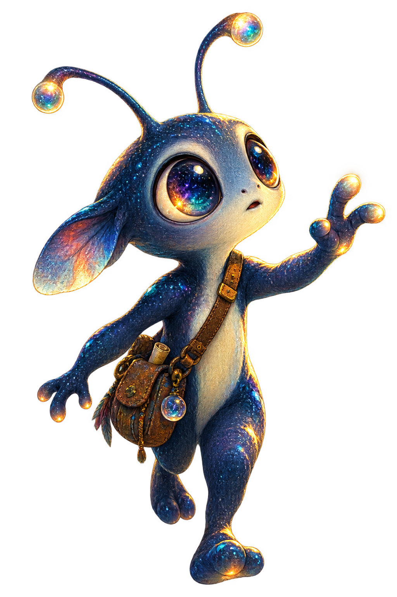
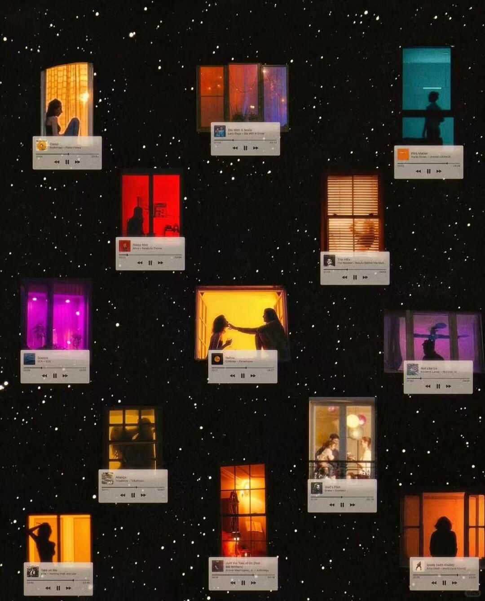
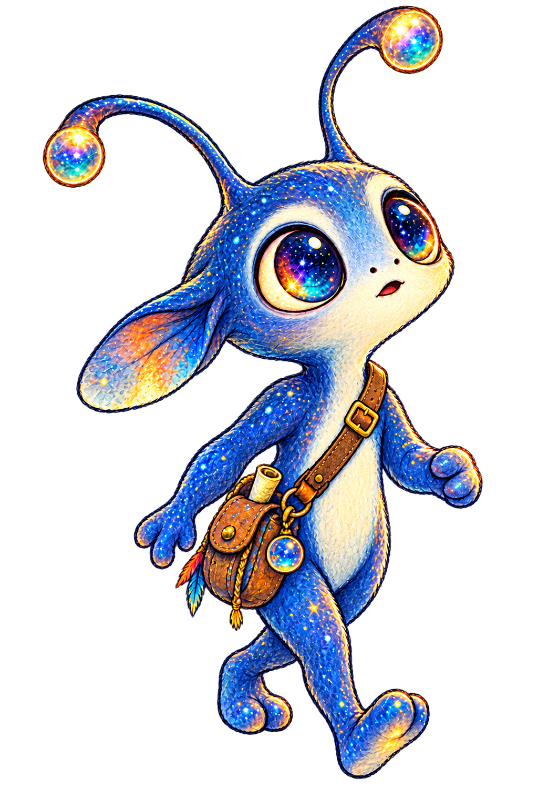
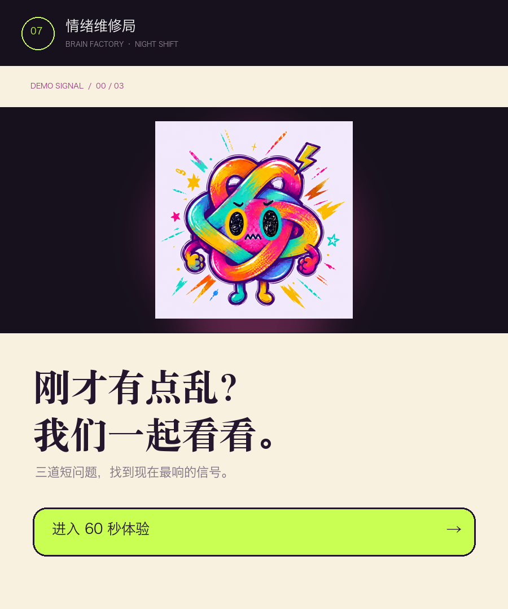

它提出的问题
我的研究手记
公开版仅呈现研究问题与阶段性观点。完整 Word / PDF 报告保留在本地，完成脱敏和重构后再选择性发布。
Earth log · day 001
它对这里的一切都很好奇：先触摸一颗颗前沿科技的梦，再走进城市陪伴人们行动，最后抵达最复杂也最柔软的地方——人的心灵。

“这里的技术如此耀眼，Act 01 / Space
“它先学会仰望。
每一项技术，都是人类写给未来的一封信。”
Act 02 / City
“它发现，比目的地更重要的，
是有人理解你为什么出发。”


一个陪伴理念，两个日常入口
不是替人安排生活，而是理解当下的状态，在出发前、行动中和结束后提供恰到好处的回应。
从“今天的你”出发，不复制一张热门清单。
懂得何时出现，也懂得何时把空间还给人。
不止记录打卡，而是形成自己的城市叙事。
Act 03 / Inner world
“有些冲动不是敌人，
只是一个还没被听懂的信号。”
Emotional eating intervention app
围绕情绪性进食冲动，我设计了一个快速、无评判的心理支持入口。它不诊断、不说教、不以减重为目标；它帮助用户辨认身体与情绪信号，在压力最强的几分钟里重新找回选择能力。

不把进食视为失败，不用羞耻、卡路里或连续戒断制造压力。
区分情绪需求与真实饥饿，让身体饥饿拥有清晰、正常的出口。
目标不是让冲动每次都消失，而是让用户更清楚地决定下一步。
The end is also the beginning